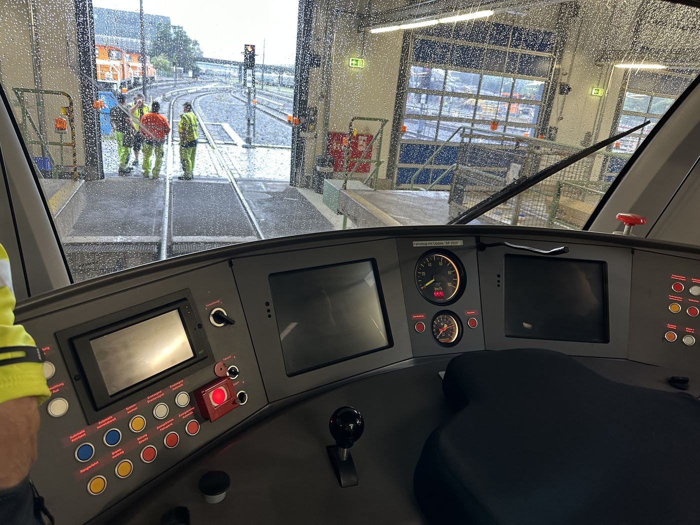

Führerstand mit Bedienpult; der rote Nothalt-Taster sitzt oben rechts nahe der Frontscheibe.
Bauteil auf der Seite „Führerstand“
Rote Not-Aus-Taste im Führerstand. Bei Betätigung wird eine Zwangsbremsung ausgelöst und der Fahrbetrieb sofort unterbrochen – auch im automatisierten Fahrbetrieb.
Der Nothalt ist Teil der Sicherheitskette des Fahrzeugs: Seine Betätigung greift direkt und ohne Umweg über die normale Fahr-/Bremssteuerung in die Zwangsbremsung ein, damit die Reaktion auch bei einer Störung der übrigen Steuerungselektronik zuverlässig erfolgt.
In automatisierten Betriebsstufen (z. B. mit „AP“-Softwareständen für den automatischen Zugbetrieb) bleibt der Nothalt als manuelle, übergeordnete Rückfallebene bestehen.